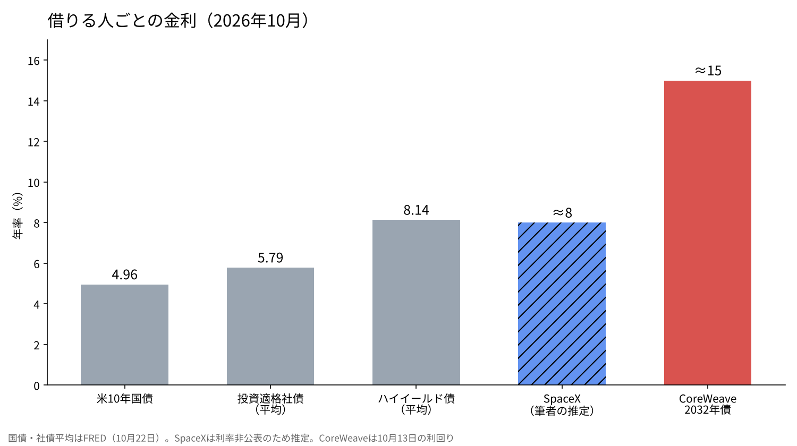
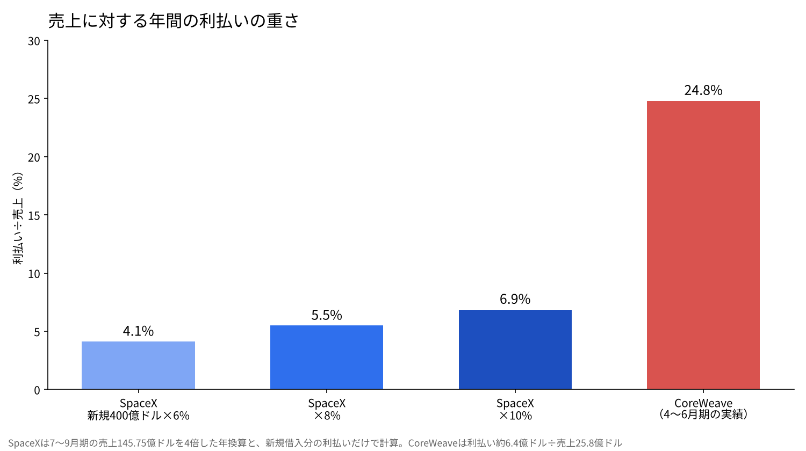

SpaceXの400億ドルの借金は何%で借りられたのか。CoreWeaveの15%と並べる
10月25日、マスク氏はSpaceXがGPUを買うための400億ドルの借入を終えたとXに書いた。同じ10月、AIクラウドのCoreWeaveの社債は、利回りが一時15%に達した。
どちらもAIの計算力に向けた借金である。しかし、貸し手がつける値段はまったく違う。
この記事では、SpaceXの決算資料と米国の金利統計をもとに、SpaceXがどの水準で借りたのかを推定し、CoreWeaveと並べて「高いのか、安いのか」を確かめる。

発表されたこと、まだ分からないこと
SpaceXについて公表されたのは、総額が400億ドルであること、主に期限より前に返せる形の債務であること、使い道がNvidiaのGPUであることだ。そのGPUは2027年1〜6月期に届く予定とされる。マスク氏は、投資適格として扱われたことと、Starlinkと打ち上げの収入を理由に挙げた。
一方で、利率・満期・格付け会社・引き受けた銀行は、この記事を書いている時点で確認できなかった。だから以下の金利は推定である。推定の前提を1つずつ明示して進める。
物差しになる3つの金利
推定には物差しがいる。米セントルイス連銀のデータベースFREDによると、10月22日時点で米10年国債の利回りは4.96%だった。投資適格社債の平均利回りは5.79%、ハイイールド債（格付けの低い社債）の平均は8.14%である。
国債と投資適格の差は0.83ポイント、投資適格とハイイールドの差は2.35ポイントある。同じドルを借りても、貸し手が見る「返せる確からしさ」で、金利はこれだけ開く。
投資適格とは、格付け会社の評価がBBBマイナス以上の借り手を指す。年金や保険会社など、規則で投資適格にしか貸せない資金が多いので、ここに入るかどうかで借りられる相手の数が変わる。米国債との差（上乗せ幅）で見ると、投資適格の平均は0.83ポイント、ハイイールドの平均は3.18ポイントになる。

CoreWeaveの15%は何を意味するか
CoreWeaveは、GPUを並べたデータセンターを企業に貸すAIクラウドの会社だ。表面利率9.625%・2032年満期の社債は、10月13日に利回りが一時15%に達した。9.75%・2031年満期の社債も約14.9%で取引された。
発行したときの利率より利回りが5ポイント以上高いということは、債券の値段がそれだけ下がったということだ。報道によると総債務は約520億ドル、4〜6月期の利払いは約6.4億ドルで、売上25.8億ドルの約25%にあたる。5年物のCDS（倒産に備える保険料）は一時1,140ベーシスポイントを超えた。市場は、ハイイールドの平均よりさらに7ポイント近く高い値段をつけている。
SpaceXの返す力を決算で確かめる
SpaceXが公表した7〜9月期の決算では、売上は145.75億ドルで、前の年より161%増えた。うちAI関連は75.6億ドルである。純利益は44.04億ドル、設備投資は195.93億ドルで、そのうちAI向けが164.44億ドルだった。
貸借の側を見ると、9月末の現金は512.94億ドル、債務とリースは388.44億ドルで、現金が債務を上回っている。ただし10〜12月期の設備投資は350億〜400億ドルの見通しで、7〜9月期のおよそ2倍になる。今回の400億ドルは、この投資を賄うための借金だと読める。
借りた400億ドルをいったん現金に足すと、現金は約913億ドル、債務とリースは約788億ドルになり、まだ現金のほうが多い。ところが10〜12月期に350億〜400億ドルを使えば、現金は約513億〜563億ドルまで減り、債務を225億〜275億ドルほど下回る。差し引きで借金の側に回るのは、この四半期が初めてになるかもしれない。ここが、貸し手が利率を決めるときに見ている点だと思う。
何%なら、どれだけ重いか
利率は非公表なので、6%・8%・10%の3通りで計算する。400億ドルなら、年間の利払いはそれぞれ24億ドル、32億ドル、40億ドルになる。7〜9月期の売上を4倍した年換算の約583億ドルに対して、4.1%、5.5%、6.9%だ。CoreWeaveの約25%とは重さが違う。
| 利率 | 年間の利払い | 年換算の売上（約583億ドル）に対して | 年換算の純利益（約176億ドル）に対して |
|---|---|---|---|
| 6% | 24億ドル | 4.1% | 13.6% |
| 8% | 32億ドル | 5.5% | 18.2% |
| 10% | 40億ドル | 6.9% | 22.7% |
この計算は新しい借入の分だけで、既存の債務の利払いは含まない。それでも、売上の規模に対して利払いが小さいことは、数字で確かめられる。
利益の側からも見ておく。7〜9月期の純利益44.04億ドルに対して、8%なら1四半期の利払いは8億ドルで、利益はその約5.5倍ある。CoreWeaveは、売上の4分の1が利払いに消えている。同じ「AIの計算力への借金」でも、返す原資の厚さがまったく違う。

8%台という見立て
僕の見立ては、SpaceXは8%台くらいで借りたのではないか、というものだ。米国債が5%前後なら、そこに3ポイントほど上乗せした水準になる。同じAIへの投資で、ソフトバンクは9%前後で借りていると見ている。
8%は投資適格の平均5.79%より高く、ハイイールドの平均8.14%に近い。投資適格と言いながらこの水準になるとすれば、理由は2つ考えられる。1つは、非上場で情報の開示が限られること。もう1つは、GPUという数年で価値が下がる資産に向けた借金であることだ。期限より前に返せる形にしたのは、上場や利益の増加で条件が良くなったときに借り換えるためだと思う。

同じAIの借金でも、値段が違う理由
CoreWeaveとSpaceXの違いは、返すお金がどこから来るかにある。CoreWeaveの返済の元手は、GPUを貸した賃料が中心だ。顧客が契約を減らせば、収入と担保の価値が同時に下がる。
SpaceXには、Starlinkと打ち上げという別の収入があり、計算力は自分でも使う。貸すのは余った部分である。自分で使って余りを貸す側と、貸すことだけで返す側では、同じGPUでも貸し手が見る危うさが違う。15%と8%の差は、その違いの値段だと僕は受け止めている。
もう1つは、借金の期間と資産の寿命の関係だ。GPUは新しい世代が2〜3年ごとに出て、古い世代の貸し出し料金は下がっていく。CoreWeaveの社債は2031年や2032年に満期を迎えるが、そのとき今のGPUがどれだけ稼げているかは分からない。資産の寿命より長い借金は、借り換えができなければ返せない。SpaceXが期限前に返せる形を選んだのは、この順番を逆にしておくためでもあると思う。
僕はこう見ている
僕はSpaceXを1,250株持っている。平均の買値は138.07ドルで、10月26日の値は144.75ドルだった。今回の借金は、持つ理由を弱めないと考えている。
ただし、10月は月々の積み立てを止めた。持っているシェアオフィスのビルの外壁補修の金額が、まだ出ていないからだ。SpaceXの借金とは関係がない。実業の支出が見えるまでは、株を売る前に入金から止める。
データセンターを持つ会社には投資しない。投資の局面が終われば、AIの会社はまず電気代と計算力の調達から削りにいくと見ているからだ。CoreWeaveの15%は、その順番を市場が先に値付けしているのかもしれない。利率が公表されたら、この推定を答え合わせする。
答え合わせの物差しも先に決めておく。公表された利率が9%以上なら、市場はSpaceXの借金をハイイールド並みに見ていることになり、GPUへの投資の回収に時間がかかると読む。7%以下なら、投資適格に近い扱いで、Starlinkの収入が担保として評価されたと読む。8%前後なら、僕の見立てどおりだ。どの場合でも、持ち株の数はすぐには変えない。
出典
- SpaceX「Third Quarter 2026 Results」 https://s21.q4cdn.com/184289198/files/content_files/SpaceX-Reports-Third-Quarter-2026-Results.pdf
- Investing.com「Musk says SpaceX raised $40 billion in debt for GPUs」（2026年10月25日） https://www.investing.com/news/stock-market-news/musk-says-spacex-raised-40-billion-in-debt-for-gpus-4971248
- FRED「Market Yield on U.S. Treasury Securities at 10-Year」 https://fred.stlouisfed.org/series/DGS10
- FRED「ICE BofA US Corporate Index Effective Yield」 https://fred.stlouisfed.org/series/BAMLC0A0CMEY
- FRED「ICE BofA US High Yield Index Effective Yield」 https://fred.stlouisfed.org/series/BAMLH0A0HYM2EY
- Crypto Briefing「CoreWeave shares plunge as bond yields hit 15%」（2026年10月） https://cryptobriefing.com/coreweave-shares-plunge-bond-yields-15/
- UA.News（CNBC配信）「CoreWeaveのCDSスプレッドが1,000bpを超える」（2026年10月） https://ua.news/en/finansi/spredi-cds-coreweave-perevishchili-1-000-b-p-cnbc
写真：Iván Martínez Díaz／Taylor Vick（Unsplash）。図はYUKI CAPITALが作成
日々の数字と判断は、Xで記録している。